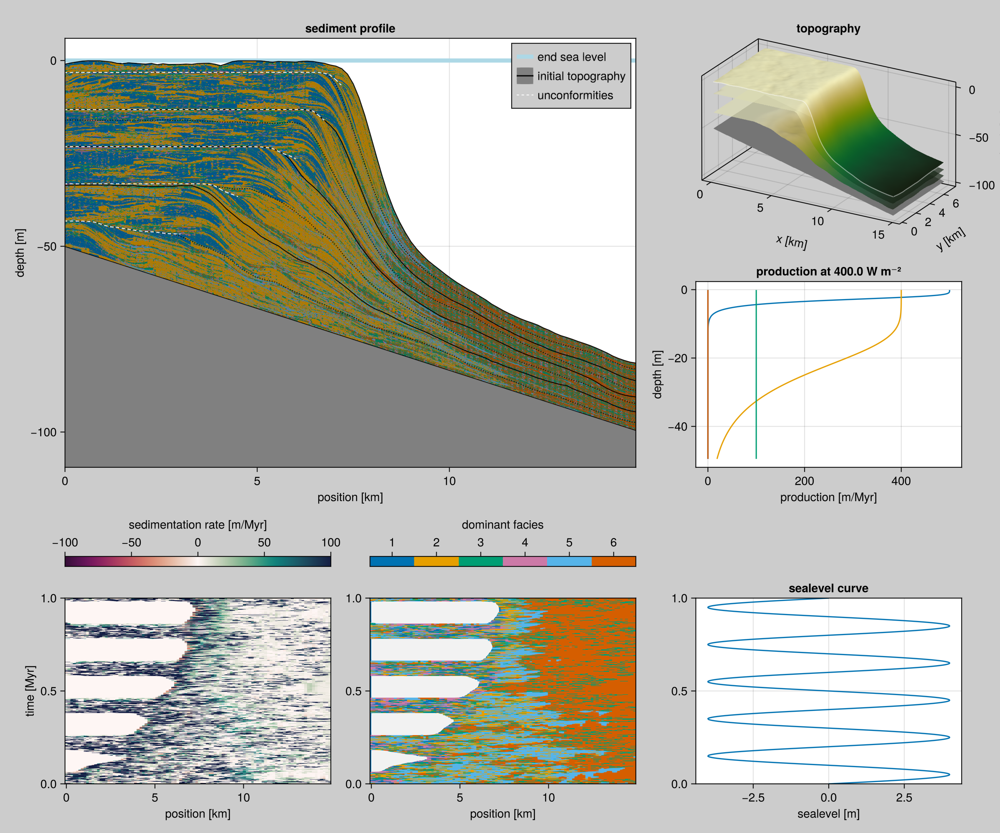

Model with CA, Production and Active Layer transport (ALCAP)
The following Sedimentation model includes the Burgess 2013 Cellular Automaton, Bosscher & Schlager 1992 Production curves and an Active Layer transport model, based on Paola 1992, henceforth ALCAP.

Example Input
The following is a complete example input.
⪡alcap-example-input⪢≣
const TAG = "alcap-example"
const FACIES = [
ALCAP.Facies(
viability_range = (4, 10),
activation_range = (6, 10),
production = BenthicProduction(
maximum_growth_rate=500u"m/Myr",
extinction_coefficient=0.8u"m^-1",
saturation_intensity=60u"W/m^2"),
transport_coefficient=50.0u"m/yr",
name="euphotic"),
ALCAP.Facies(
viability_range = (4, 10),
activation_range = (6, 10),
production = BenthicProduction(
maximum_growth_rate=400u"m/Myr",
extinction_coefficient=0.1u"m^-1",
saturation_intensity=60u"W/m^2"),
transport_coefficient=25.0u"m/yr",
name="oligophotic"),
ALCAP.Facies(
viability_range = (4, 10),
activation_range = (6, 10),
production = BenthicProduction(
maximum_growth_rate=100u"m/Myr",
extinction_coefficient=0.005u"m^-1",
saturation_intensity=60u"W/m^2"),
transport_coefficient=12.5u"m/yr",
name="aphotic")
]
const PERIOD = 0.2u"Myr"
const AMPLITUDE = 4.0u"m"
const INPUT = ALCAP.Input(
tag="$TAG",
box=Box{Coast}(grid_size=(100, 50), phys_scale=150.0u"m"),
time=TimeProperties(
Δt=0.0002u"Myr",
steps=5000),
output=Dict(
:topography => OutputSpec(slice=(:,:), write_interval=10),
:profile => OutputSpec(slice=(:, 25), write_interval=1)),
ca_interval=1,
initial_topography=(x, y) -> -x / 300.0,
sea_level=t -> AMPLITUDE * sin(2π * t / PERIOD),
subsidence_rate=50.0u"m/Myr",
disintegration_rate=50.0u"m/Myr",
lithification_time=100.0u"yr",
insolation=400.0u"W/m^2",
sediment_buffer_size=50,
depositional_resolution=0.5u"m",
facies=FACIES)file:examples/model/alcap/run.jl
#| requires: src/Models/ALCAP.jl
#| creates: data/output/alcap-example.h5
module Script
using Unitful
using CarboKitten
using CarboKitten.Export: read_slice, data_export, CSV
const PATH = "data/output"
<<alcap-example-input>>
function main()
run_model(Model{ALCAP}, INPUT, "$(PATH)/$(TAG).h5")
header, profile = read_slice("$(PATH)/$(TAG).h5", :profile)
columns = [profile[i] for i in 10:20:70]
data_export(
CSV(:sediment_accumulation_curve => "$(PATH)/$(TAG)_sac.csv",
:age_depth_model => "$(PATH)/$(TAG)_adm.csv",
:stratigraphic_column => "$(PATH)/$(TAG)_sc.csv",
:water_depth => "$(PATH)/$(TAG)_wd.csv",
:metadata => "$(PATH)/$(TAG).toml"),
header,
columns)
end
end
Script.main()Plotting code
file:examples/model/alcap/plot.jl
#| creates: docs/src/_fig/alcaps-alternative.png
#| requires: data/output/alcap-example.h5
#| collect: figures
using GLMakie
using CarboKitten.Visualization
GLMakie.activate!()
save("docs/src/_fig/alcaps-alternative.png", summary_plot("data/output/alcap-example.h5"))Modular Implementation
file:src/Models/ALCAP/Example.jl
module Example
using Unitful
using ..ALCAP: ALCAP
using CarboKitten.Production: BenthicProduction
using CarboKitten.Boxes: Box, Coast
using CarboKitten.Config: TimeProperties
using CarboKitten.Output.Abstract: OutputSpec
<<alcap-example-input>>
endfile:src/Models/ALCAP.jl
@compose module ALCAP
@mixin Tag, Output, CAProduction, CAFeedback, ActiveLayer, InitialSediment, Diagnostics
using ..Common
using ..CAProduction: production
using ..TimeIntegration
using ..WaterDepth: water_depth
using ...Output: Frame
using ModuleMixins: @for_each
export Input, Facies, BenthicProduction, PelagicProduction
function initial_state(input::AbstractInput)
ca_state = CellularAutomaton.initial_state(input)
for _ in 1:20
CellularAutomaton.step!(input)(ca_state)
end
bathymetry = initial_topography(input)
sediment_buffer = zeros(Float64, input.sediment_buffer_size, n_facies(input), input.box.grid_size...)
sediment_thickness = zeros(Height, input.box.grid_size...)
active_layer = zeros(Amount, n_facies(input), input.box.grid_size...)
state = State(
step=0,
bathymetry=bathymetry,
sediment_thickness=sediment_thickness,
sediment_buffer=sediment_buffer,
active_layer=active_layer,
ca=ca_state.ca, ca_priority=ca_state.ca_priority)
InitialSediment.push_initial_sediment!(input, state)
return state
end
function initial_frame(input::Input)
dep = stack(InitialSediment.initial_sediment(input.box, f) for f in input.facies; dims=1)
return Frame(production=zeros(Sediment,size(dep)),
disintegration=zeros(Sediment,size(dep)),
deposition=dep)
end
function step!(input::Input)
step_ca! = CellularAutomaton.step!(input)
subside! = subsider(input)
disintegrate! = ActiveLayer.disintegrator(input)
produce = production(input)
kill_unproductivity! = CAFeedback.ca_feedback(input)
transport! = ActiveLayer.transporter(input)
local_water_depth = water_depth(input)
na = [CartesianIndex()]
pf = lithification_factor(input)
dtf = input.disintegration_transfer
debug = input.diagnostics
push! = push_sediment(input)
pop! = pop_sediment(input)
function (state::State)
if debug
@debug "step: " state.step
@debug " current active layer ambitus: " extrema(state.active_layer)
end
if mod(state.step, input.ca_interval) == 0
step_ca!(state)
end
wd = local_water_depth(state)
p = produce(state, wd)
kill_unproductivity!(state.ca, p)
d = disintegrate!(state)
state.active_layer .+= p
state.active_layer .+= dtf(d)
if debug
@debug " post-production ambitus: " extrema(state.active_layer)
end
transport!(state)
if debug
@debug " post-transport ambitus: " extrema(state.active_layer)
end
deposit = pf .* state.active_layer
push!(state, deposit)
state.active_layer .-= deposit
subside!(state)
state.step += 1
return Frame(
production=p,
disintegration=d,
deposition=deposit)
end
end
function write_header(input::AbstractInput, output::AbstractOutput)
@for_each(P -> P.write_header(input, output), PARENTS)
end
include("ALCAP/Example.jl")
end